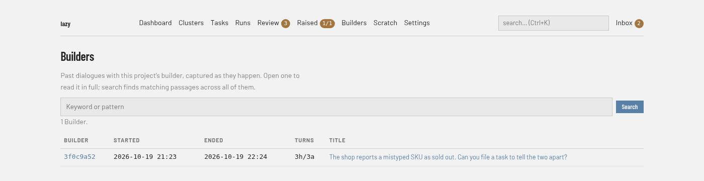

Importing Claude Code conversations
Lazy stores conversations — the reasoning, exploration, and decisions from interactive Claude Code sessions — as persisted development context alongside task data. Sessions for a lazy project are captured live (see below). This page covers importing other Claude Code history into the store: sessions that predate lazy, or that recovery left behind.
Adopting lazy on a repo that already has Claude Code history should mean inheriting that history as builder memory — not starting from scratch.
Builders: one conversation, however many session files
Claude Code rolls a long session into a fresh session file when it compacts
the context and when a session is resumed, and /clear starts a fresh one too.
Lazy lists and opens Builders, not session files: a Builder runs from a
start or /clear to the next /clear, and compaction and resume continue
it. Lazy joins the files by the links Claude Code writes into them, so
lazy conversations, lazy conversations show, search, lazy ask,
the dashboard's Builders page and the conversation MCP tools each
show one entry per Builder, with every message across its files. A Builder's
id is the session id of its first file; any of its session ids (or a unique
prefix) opens it. A builder you started from the dashboard shows its state as a
badge on its Builder once that builder has stopped at least once (the session
it is in is recorded when it stops).
Conversations imported before this existed are grouped the same way, with no
re-import. A compaction captured before then may still show as two Builders;
lazy import-conversation --all --yes re-reads the session files still on disk
and joins them. Captured builder scratch files record the Builder that last wrote
them.
Who had the conversation
In Lazy Teams, each member has their own builder. Project members can read captured Builders belonging to other members, but reading a conversation does not grant permission to attach to or control someone else's builder.
New captures from a registered builder retain its owner's email address, and Teams uses that address for human message labels instead of calling every author “You”. Older or imported history without a known owner is labelled “Human (unknown)”; Lazy does not assume the reader or importer wrote it.
Live capture: two paths, both automatic
Nothing needs importing for sessions that happen while lazy is running — they are captured as they go:
- The builder's own session is captured by the in-container builder supervisor, on a timer while the session runs and again on exit. That covers what the builder can see from inside its container, and nothing else.
- Every other Claude session for the project runs on the host: any
claudeyou run in the repo yourself. The daemon sweeps the Claude projects dirs once a minute and captures those. It is cheap by construction — discovery isreaddirstatplus one small head-read per session, and a session is parsed only when it is new or has changed since the last pass.
Capture never shortens a conversation
The same session exists in several projects dirs, and a stale copy can be touched — mounted, refreshed — without gaining a byte. Storing such a copy would replace a conversation with an earlier snapshot of itself, so a capture whose messages are a strict prefix of what is already stored (same message uuids, position for position, fewer of them) is refused, and the refusal is logged. This is deliberately narrow: a conversation that genuinely diverged is still stored, because there the on-disk copy is the truth.
What is deliberately NOT captured
Lazy runs its own machine-generated claude -p one-shots — the PR/commit
fidelity summaries on every accept, lazy report, and LLM memory compaction.
These are housekeeping, not conversations, and would drown real builder
conversations in lazy conversations and search. They are never captured,
by either path.
They are identified by a marker that lazy's one-shot runner prepends to the prompt, so the session JSONL carries it durably. Detection is structural — marked at the source, not sniffed from prompt wording — so a real conversation that merely discusses the marker is still captured.
Local-command transcripts
Running a built-in slash command — /clear, /model, /compact, /login, /effort —
makes Claude Code write three kinds of message into the session log: a fixed
caveat telling the model to ignore what follows, the command invocation itself,
and whatever the command printed. Nobody said any of it, so none of it is
conversation, and it is dropped when a session is read.
Two things follow. A session made of nothing but local commands — the usual
shape, because /clear opens a fresh log and typing /clear again ends it — has
no content left and is never stored at all. A real conversation that merely
starts with a /clear is stored as it always was, minus the boilerplate, so
its one-line summary is the first thing you actually said instead of the caveat.
The line is drawn at "did a human type it". A command whose arguments carry your
own words (/compact keep the focus on last night's run) is kept, and so is any
message that merely quotes one of these wrappers while discussing it. Matching is
on Claude Code's own tags, never on the caveat's wording, so a reworded caveat
means a message is kept rather than silently dropped.
An /effort invocation with a setting such as high is also omitted: choosing
a reasoning level is a setting change, not a conversation message. Background
agent completion notifications are omitted as well; they are generated by the
agent harness, not typed by a human. Builder titles and transcripts apply the
same filtering to previously captured history without rewriting the original
stored messages.
Only Claude Code's own built-in commands count as boilerplate. Your project's
slash commands are kept, even when you invoke one with no arguments — /deploy
on its own stays in the transcript. Claude Code writes a custom command exactly
the way it writes /clear, so there is no way to tell them apart by shape, and
the invocation is usually the line that explains why the next fifty messages
happened. If a built-in ever turns up in a transcript, that is the same rule
erring the safe way: lazy keeps anything it does not recognise.
One thing is not filtered: /context writes its report as an ordinary message
with no wrapper around it, so there is nothing to match on that a human could not
also have typed, and those still appear.
Cleaning up conversations stored before this filter existed
Filtering happens as a session is read, so conversations captured earlier still
carry the boilerplate — they still list the caveat where your first sentence
should be. lazy doctor warns when it finds any, and one flag cleans them:
lazy doctor --clean-local-command-conversations # lists, changes nothing
lazy doctor --clean-local-command-conversations --dry-run # lists and stops
lazy doctor --clean-local-command-conversations --yes # applies
It prints every conversation it would touch — short session ID, start time, how
many scaffolding messages it would drop, the summary it has today and the one it
would get — and then, on a terminal, asks; the default is no, and a non-TTY
is told to re-run with --yes. Nothing runs on its own, ever.
Each conversation is put back through today's reader, so the result is exactly what importing that session fresh would produce: the scaffolding messages go, the summary becomes the first thing you actually said, and everything else — your messages, the assistant's replies, the token totals — is untouched.
On its own it deletes nothing. Some stored rows are nothing but
scaffolding (a caveat and a /clear, with no conversation around it) — a
listing entry with no conversation behind it. Those are listed so you can see
how many there are, and then left exactly as they are.
If you want them gone, ask for it explicitly:
lazy doctor --clean-local-command-conversations --delete-empty-local-command-conversations
Only rows whose every stored message is scaffolding are deleted; a
conversation with one real message in it is cleaned, never removed. The flag is
never implied by --yes, and the deletion is confirmed separately from the
cleanup — approving the rewrite is not approving a delete. Each row is listed
first with its short session ID and start time, on a terminal the question
defaults to no, and without a terminal and without --yes the command
refuses rather than guessing.
Deletion is permanent as far as lazy is concerned, and one thing is worth
knowing before you say yes: a deleted row is not brought back by lazy doctor --reimport-conversations even if its raw Claude JSONL is still on disk,
because today's reader drops that session as empty — which is the whole reason
it is not worth keeping.
Other sessions lazy does not capture
The end-of-pairing session summary (lazy pair) carries the same marker, even
though it goes through a supervised turn rather than a machine one-shot — its output
already lands on the task as a turn, so capturing the session too is noise.
Deliberately-skipped one-shots never count as uncaptured, so the lazy doctor
capture check below does not go red after every accept.
One-shots never become your resume target
Lazy also ignores its own one-shots when working out which Claude session a
builder, lazy pair or lazy chat launch was running, and when lazy watch
picks the session to follow. Without that, a housekeeping summary fired by an
accept during your builder session could become the newest session file and be
offered as the lazy builder --resume <id> target — reopening the housekeeping
conversation instead of yours. Files lazy cannot read, or that carry no marker,
are treated as real sessions: a redundant capture costs nothing, while losing
your resume target costs the session.
Where a one-shot runs
Every machine one-shot runs in a throwaway container from the project's agent image — the same isolation as a supervised task turn (proxy, placeholder credentials, audit log). Nothing agent-shaped runs on the host.
- Accept's merge-description summary and memory compaction get no repository mount at all, so they cannot write to the branch being merged.
lazy askandlazy reportget the project root mounted read-only, so the agent can read the tree but cannot write into it.
Session state lands in a lazy-owned agent state directory (the .claude tree
for Claude Code, .cursor for Cursor) at
~/.lazy/oneshot/<project-slug>/<config-dir>, mounted into the container — not
your real ~/.claude or ~/.cursor, and not the daemon directory that holds
lazy's tokens and credentials. The directory is stable per project, so one-shots
do not leave a new ~/.claude/projects/ entry behind each time. Set
LAZY_ONESHOT_BASE_DIR to relocate the base for every project at once. Write
tools are disallowed.
Docker must be available — a one-shot fails loud with actionable guidance if the runner cannot launch a container; there is no silent fallback to a host spawn.
How long a one-shot may run
Every machine one-shot is bounded: a run is killed after ten minutes with an
error that says so. A one-shot is a single model call — one prompt, one answer,
no tools to wait on — so ten minutes only ever elapses on a call that is never
going to answer, which is what an unreachable proxy or API endpoint looks like
from the inside. The bound keeps an accept from hanging in merging and keeps
lazy report, lazy ask and lazy memory compact from hanging your terminal.
A timed-out run's container is removed, so it cannot linger. Each command then
handles the failure the way it handles missing authentication: memory compaction
falls back to mechanical compaction (and in --llm mode fails while naming that
alternative), a lazy report map unit is listed as a failed unit and the digest
is composed without it, and a lazy ask excerpt becomes a warning on an answer
built from the rest. A timeout in a reduce pass — the single call that
composes the final answer — fails the command, because there is nothing left to
degrade to.
Purging housekeeping conversations captured before the marker
Conversations stored before the marker shipped carry no marker, so nothing
removes them automatically. lazy doctor --purge-housekeeping-conversations
is the one-time cleanup for them:
lazy doctor --purge-housekeeping-conversations # lists, deletes nothing
lazy doctor --purge-housekeeping-conversations --yes # deletes
Without --yes it prints every conversation it classified — short session ID,
start time, which kind of one-shot it is, and why it was classified — and
deletes nothing. On a TTY it then asks for confirmation, defaulting to no;
a non-TTY is told to re-run with --yes. Deletion is not recoverable from lazy
(Claude Code prunes the raw JSONL on disk over time), so read the list.
This is the only place in lazy that classifies a conversation by sniffing prompt wording. That is acceptable here because the command is explicit, human-reviewed, and one-time, where at capture time — running forever, on every sweep tick — it would not be. Every rule is anchored at the very start of the conversation's single user message, so a real conversation that quotes a lazy prompt is never matched.
A caveat worth knowing: because these conversations have no marker on disk,
lazy doctor --reimport-conversations will re-import them if their raw JSONL is
still present. Purge is about cleaning up the store, not about rewriting what is
on disk.
When live capture is not running
If the daemon is not running, its host-side sweep is not running either — the
sessions stay on disk until a daemon is up or you import them manually.
lazy doctor fails (not warns) when it finds sessions from the last 24 hours
that never reached the store, because that means live capture is broken now:
✗ Conversation capture is live
3 conversation(s) written in the last 24h (most recent 41m ago) are on disk
but never reached the store — live capture is not running.
Sessions written in the last few minutes are treated as in flight, not as failures — the sweep may simply not have ticked yet.
A builder or lazy pair session that ends while the daemon is down is not
lost: lazy keeps a copy under .lazy/recovery/conversations/ and tells you so,
and the daemon stores it automatically the next time it runs. Files there that
are not valid recovery files are renamed to *.invalid and never stored.
What a builder session tells you when its capture failed
The first path runs on a 30-second timer inside the builder's container, where its only voice is a log file you are not watching. So when a builder session ends, it prints on your terminal what went wrong — once, after the Claude Code interface is gone:
Conversation capture failed during this session — some or all of this session's
history may not be in the lazy store, and `lazy upgrade` may not be able to
resume it:
[builder] Incremental capture failed: Unable to connect. Is the computer able
to access the url? [ConnectionRefused]
Check `lazy daemon status`, then `lazy doctor` for details.
`lazy doctor --reimport-conversations` can re-import from the session files on disk.
Each distinct reason is listed once, however many times it recurred. Beyond the first five the report says how many more it is not showing rather than truncating silently, and the full list is in that session's supervisor log.
Reasons carry the machine detail as well as the prose — the error code, and the underlying error when one was wrapped. Without it the most common failure of all reads as "unable to connect" with no address and no reason, which is not enough to tell a wrong port from an unreachable host.
One surface: lazy import-conversation
lazy import-conversation is the single surface for bringing Claude Code
history into the store, per-session or in bulk.
lazy import-conversation # Preview + import all new sessions
lazy import-conversation --yes # Import all new sessions, no prompt
lazy import-conversation --list # List available sessions
lazy import-conversation bc77e1b1 # Import one session (id can be shortened)
lazy import-conversation --all # Re-import everything (incl. already imported)
lazy import-conversation --show-imported # Show already-imported conversations
lazy import-conversation --show bc77e1b1 # Show a full conversation transcript
Where it looks (multi-root discovery)
Discovery spans every Claude projects dir for this repo:
- the shared
~/.claude/projects/<encoded-repo>/dir, and - each builder's own isolated projects dir, under lazy's data directory.
When the same session appears in several dirs (seeding copies a session into each isolation dir), the most complete copy is used (largest size, newest mtime). This means a session that only ever lived in an isolation dir is still importable — both in bulk and by session-id.
Not to be confused with lazy builder --resume <id> --import, which is a
different operation entirely: it decides which projects dir a builder launch
mounts (adopting a session that has never run under builder isolation), and
writes nothing to lazy's store. Importing a conversation here never affects which
sessions /resume lists, and adopting a session there never imports it.
Bulk import never writes silently
Running lazy import-conversation with no session-id previews what would be
imported and asks for confirmation before writing:
Found 5 session(s) on disk; 3 missing from the store, 2 already imported.
Import 3 conversation(s) into the store?
Pass --yes to skip the prompt (for non-interactive callers). On a non-TTY
without --yes, it prints what it would do and writes nothing. Naming an
explicit session-id, or passing --all, imports directly — the argument/flag
is itself explicit intent.
Import is idempotent: sessions already in the store are skipped, and empty or
unparseable JSONL shells are skipped rather than stored as content-free stubs.
Lazy's machine-generated one-shots are excluded from discovery entirely, so no
import path can resurrect them; when any are present the count is reported
(ignored 2 machine-generated lazy one-shot(s)) rather than passed over in
silence, and naming one explicitly says so instead of "session not found".
Recovery is the same flow
lazy doctor --reimport-conversations is an alias for the bulk path of
lazy import-conversation — same multi-root discovery, dedupe, preview, and
confirmation. It exists as a recovery entry point for stranded builder
conversations (sessions that are on disk but never reached
the store). The lazy doctor health sweep also detects conversations
on disk but not in the store — a warning for old ones, a failure for recent ones
(see When live capture is not running) — and points at this command; detection is
report-only and never writes.
lazy doctor --reimport-conversations # Preview, then confirm
lazy doctor --reimport-conversations --yes # Recover without prompting
Using what is stored
Claude Code's own retention ages old sessions out of /resume; lazy's store
keeps them. Browse them from the terminal:
lazy conversations # list (newest first)
lazy conversations search "design decision" # search message content
lazy conversations show 4f8c2a1b # read one in full
lazy builder list shows the same table; lazy show <builder-id> still
works too. For structured search across the whole project,
lazy search --conversations and lazy search 'in:conversations <text>' also
reach conversation bodies.
In the browser

The daemon's web UI serves the same Builders under Builders in the nav
(the dashboard's address is printed by lazy daemon status; old
/conversations links redirect):
/builders— every Builder, newest first: its id, start and end, how many turns came from you and from the builder, and its title. The search box takes the same patternlazy conversations searchdoes and shows the matching passages inline, so you can tell from the results which Builder you meant before opening it. A pattern the engine rejects — a typo, or one that takes too long to evaluate — is named on the page; the box keeps what you typed./builders/<id>— one Builder, read as a dialogue across all its session files. Long transcripts are paged 40 messages at a time with Earlier / Later links. A short id works here too, as long as it is unique; an ambiguous one is refused rather than resolved to a guess.
Conversations are captured, never authored here: nothing you do on these pages edits a transcript. The one thing they let you create is a task, from part of a transcript — see below. Everything works with JavaScript turned off. Lazy Teams shows the same for a project under Builders: the list, with your running builder first and each builder's run state as a badge, and a page per builder with its whole transcript, the files it left in scratch and — when it is yours and running — its terminal with Stop and End. A builder you have just started is listed as soon as its transcript is first captured (within about half a minute), but without its run badge until the run has stopped once; until then the run itself is offered on its own as Running now. Old Transcripts links redirect. There the badge rides the Builders nav entry, and the mark it counts against is kept per member on the server.
The Builders nav entry carries a badge counting Builders that grew since you last opened the listing. That mark lives in your browser rather than in the store — conversations have no read state — so each browser counts for itself; see the nav counts.
Turning part of a conversation into a task
Decisions get made in a builder session and then have to be typed out again as a task. They don't. Promote the exchange instead — in the browser or from the terminal — and you get a backlog task seeded with those messages, verbatim, which you edit before anything is created.
You always name a range of messages, never the whole conversation: a session runs to hundreds of messages across unrelated topics, so a task seeded from all of it says everything and means nothing. Messages are numbered from 1, and both surfaces show the numbers.
In the browser, open the conversation and use Start here on the first message of the exchange and End here on the last. The selected run is highlighted and a form appears with:
- Goal — the first sentence of what you said in that range
- Code — derived from the goal; edit it or clear it
- Parent task — a task id or code to file the new task under; leave it empty for a top-level task
- Prompt — the selected messages verbatim, plus a line saying which conversation and which messages they came from
In Lazy Teams, the same Start here / End here links are on a conversation, and the form is the same four fields with one difference: they start empty, and each says what it falls back to. Leave a field alone and that default is used — the goal from what you said, a code from the goal, the prompt from the messages themselves — so promoting there is two clicks and a button. Type in a field only to override it. Teams also cannot warn you about an overlap up front the way the single-project browser does; it tells you which other task shares those messages once the new one is created.
From the terminal:
lazy conversations show 3f9a01b2 # message numbers are in the transcript
lazy conversations promote 3f9a01b2 --from 12 --to 18
That prompts for the goal, code and parent, then opens $EDITOR on the seeded
prompt. Everything that can fail — an unknown session id, a range the transcript
does not have, a range already promoted — is checked before the editor opens,
so you never type a brief and lose it to a validation error. --goal, --code
and --parent set fields up front; --yes takes the seeded text unedited
(scripts and non-interactive shells get this automatically).
The new task is created in the backlog and never started — promoting writes the task down, starting the work stays your call.
Promoted twice? You'll see it. Each promoted task records which conversation and which messages it came from, so the transcript page lists what has already been promoted out of it, and a selection that overlaps an earlier one says so before you submit. Promoting the exact same range twice is refused, naming the task that already exists. A long conversation legitimately yields several tasks, so overlapping ranges are allowed — just never by accident.
Asking instead of reading: lazy ask <conversation-id>
When you want an answer rather than the whole transcript, use lazy ask:
lazy conversations # find the session id
lazy ask 4f8c2a1b -m "what did we decide about retention?"
lazy ask 4f8c2a1b # no -m: opens $EDITOR
lazy ask 4f8c2a1b -m "..." --json # structured answer
lazy ask takes either kind of id: a task id asks that task's live agent (see
lazy ask --help), a conversation session id — full, or any unique prefix —
asks the stored transcript. An ambiguous prefix is an error, never a silent pick.
Nothing is written back. A conversation is immutable history and an ask is a
read of it: no turn, no comment, and the ask's own claude -p session is marked
as a machine one-shot so it is never captured as a new conversation. The
answer goes to stdout and that is all. The agent is locked down to match — it
gets no Bash, Write or Edit, so it can only read the transcript it was handed.
Agents and the builder get the same thing as lazy_conversation_ask
(session_id + question). Prefer it over lazy_conversation_read when you
want one fact rather than the whole transcript — a long conversation read in
full can overflow the caller's own context.
Transcripts too large for one pass
Each pass reads at most 96 KiB of transcript, which keeps every call well inside
the model's context window and lets the passes run in parallel. A transcript
over that budget is therefore split at message boundaries
into consecutive excerpts: each is read for what bears on the question, and a
final pass writes one answer from those findings. --json reports chunks and
relevantChunks so you can see it happened.
Every degradation is reported rather than absorbed. An excerpt that fails to
read, a single message too large to pass whole, findings that did not fit in the
final pass — each comes back as a warning (on stderr, or in warnings under
--json). If every excerpt fails, the ask fails; you never get a confident
answer built from silently-dropped input.
Onboarding: lazy init offers to inherit history
When you run lazy init on a repo that already has Claude Code history, init
detects it and offers to inherit it. This is deliberately one step, not two
disjoint prompt blocks — adopting lazy on an existing repo should feel like a
single "inherit your history?" question, covering both kinds of history the
harness leaves behind:
- conversations — past sessions, imported as builder memory (see above)
- harness memory files —
<projects-root>/<encoded-cwd>/memory/*.md, imported as lazy shared memory records (see memory.md)
This repo already has Claude Code history from before lazy.
Found 4 existing Claude Code session(s) for this repo.
Found 3 Claude Code harness memory record(s) with no lazy counterpart.
Lazy can import both, so you inherit your project's history instead of
starting from scratch.
Import 4 conversation(s) as builder memory? [Y/n]
Import 3 memory record(s) into lazy shared memory? [Y/n]
Each half of the offer appears only when there is something to import, so a repo with sessions but no harness memory sees exactly one prompt.
Detection stays cheap for both: the per-builder isolation dirs don't exist yet at
init, so it's a single scan of ~/.claude/projects for dirs matching this repo,
plus a readdir of each match's memory/ subdir. The memory count is filtered
against the store, so re-running init never re-offers records lazy already holds.
Both offers are prompts — skipped under --non-interactive, never a silent
write. Detection and import are best-effort: a hiccup in either prints a
(Skipped Claude Code history import: …) note and never fails init. If you
decline, you can import later with lazy import-conversation and
lazy doctor --import-memory respectively.